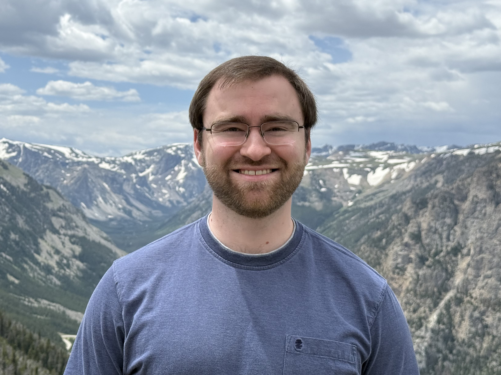

Email: robert[dot]cass[at]claremontmckenna[dot]edu

I am an Assistant Professor of Mathematics at Claremont McKenna College.
During 2022-2025 I was an NSF and RTG postdoc at the University of Michigan, sponsored by Charlotte Chan. During 2021-2022 I was an NSF postdoc at Caltech, sponsored by Xinwen Zhu.
I received my Ph.D. in mathematics at Harvard University in 2021, advised by Mark Kisin. I completed my B.S. in mathematics at the University of Kentucky in 2016.
My research interests include the Langlands program and related topics in algebraic geometry and representation theory. I am particularly interested in the application of ideas from the geometric Langlands program and motivic homotopy theory.
Mod p sheaves on Witt flags (with João Lourenço), Preprint.
Central motives on parahoric flag varieties (with Thibaud van den Hove and Jakob Scholbach), Accepted in Journal of the European Mathematical Society.
Geometrization of the Satake transform for mod p Hecke algebras (with Yujie Xu), Forum of Mathematics, Sigma 13 (2025), e26.
The geometric Satake equivalence for integral motives (with Thibaud van den Hove and Jakob Scholbach), Accepted in Compositio Mathematica.
Constant term functors with F_p-coefficients (with Cédric Pépin), Documenta Mathematica 29 (2024), 343--397.
Central elements in affine mod p Hecke algebras via perverse F_p-sheaves, Compositio Mathematica 157 (2021), 2215–2241.
Perverse F_p-sheaves on the affine Grassmannian, Journal für die Reine und Angewandte Mathematik 785 (2022), 219–272.
Here are the arXiv versions of my papers.
Motives and Arithmetic Geometry at TU Darmstadt - July 28, 2025
Sydney Mathematical Research Institute - May 28, 20205
University of Illinois Urbana-Champaign Algebraic Geometry Seminar - April 15, 2025
Texas A&M Number Theory Seminar - November 7, 2024
University of Michigan GLNT Seminar - October 7, 2024
USC Algebra Seminar - September 23, 2024
University of Michigan Commutative Algebra Seminar - November 13, 2023
Geometric and Categorical Representation Theory at Besse-et-Saint-Anastaise - October 23-27, 2023
Michigan State University Algebra Seminar - October 18, 2023
Columbia University Automorphic Forms and Arithmetic Seminar - February 17, 2023
University of Padua Algebraic Geometry and Number Theory Seminar - February 13, 2023
Caltech Algebra & Geometry Seminar - May 16, 2022
MIT Lie Groups Seminar - April 6, 2022
UCLA Number Theory Seminar - March 7, 2022
Motives and Representation Theory at the University of Münster and Sydney - September 28, 2021
Representations of p-adic groups and Langlands correspondences at the CMS 75th +1 Anniversary Summer Meeting in Ottawa, Canada - June 8, 2021
UCLA Number Theory Seminar - March 1, 2021
University of Münster Arithmetic Geometry Seminar - December 8, 2020
University of Maryland Lie Groups and Representation Theory Seminar - September 14, 2020
Harvard Number Theory Seminar - September 9, 2020
Recent Advances in Modern p-Adic Geometry (RAMpAGe) Seminar - August 20, 2020
Graduate Student Plenary Speaker at Number Theory Series in Los Angeles II, Occidental College - February 8, 2020
University of Michigan Algebraic Geometry Seminar - February 5, 2020
Institut de Recherche Mathématique de Rennes, Séminaire de Géométrie Arithmétique - December 19, 2019
L'Institut Galilée, Paris 13, Séminaire de Géométrie Arithmétique et Motivique - December 13, 2019
Yale Algebra and Number Theory Seminar - December 3, 2019
MSRI Hot Topics Workshop: Recent Progress In Langlands Program - April 8, 2019
Clemson University Algebraic Geometry and Number Theory Seminar - March 24, 2015
In Fall 2024 I co-organized an RTG Learning Seminar on Bezrukavnikov's equivalence.
In 2021-2022 I co-organized the Caltech Algebra & Geometry Seminar.
In 2020-2021 I co-organized the Harvard Number Theory Seminar.
University of Michigan:
Math 776: Class Field Theory and Complex Multiplication - Winter 2025
Math 312: Applied Modern Algebra - Fall 2024
Math 217: IBL Linear Algebra (two sections) - Fall 2023
Harvard:
Mathematics 21B: Linear Algebra and Differential Equations - Spring 2021
Mathematics MA: Introduction to Functions and Calculus I - Fall 2018
I received a Certificate of Distinction for each of these courses.
Hurwitz schemes - my minor thesis